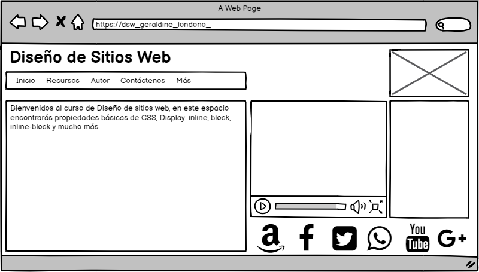

Propiedadas Básicas de CSS, Display: inline, Block, Inline-block
Objetivo general
Analizar y diseñar un OVI para dar a conocer a los estudiantes de la UNAD las propiedades básicas de CSS
Objetivos específicos
- Examinar y comprender que son las CSS y para que se usan en el desarrollo de una página o en el diseño de un sitio web
- Considerar e identificar las propiedades básicas con CSS
- Observar y reconocer las diferencias entre los modos de visualización de elementos en línea, elementos en bloque y la combinación de los dos
- Generar destrezas en el estudiante para el desarrollo de sistios web a traves del uso y/o aplicación de HTML y CSS3
Materiales utilizados
Contenido
Bienvenidos al curso de Diseño de sitios web, en este espacio encontrarás propiedades básicas de CSS, Display: Inline, Block, Inline-Block y mucho más.
Prototipo
